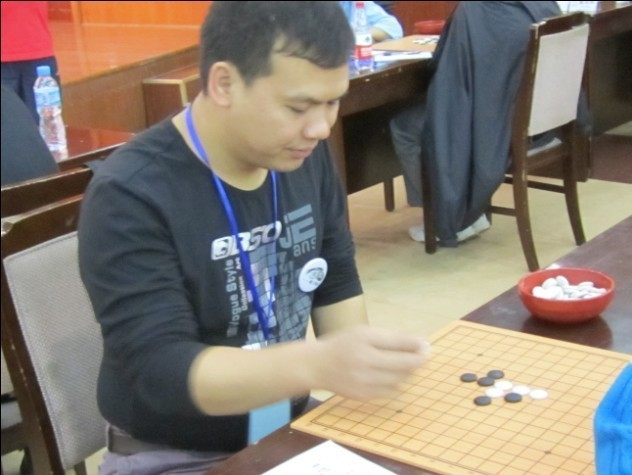

贺启发
首页
你的故事
#1 贺启发 作者：炫飞水月 发表时间：2011-7-18 21:54:23

贺启发(网名：炫飞☆白痴三落) 六段籍贯：广东
主要战绩：
2008年11月“妙手杯”全国五子棋锦标赛第六名
2009年5月“妙手杯”全国五子棋团体锦标赛冠军队三台
2009年7月第六届浙江五子棋公开赛/*760*90，创建于2012-2-9*/ var cpro_id = 'u761865';
#2 Re:贺启发 作者：被感动的人 发表时间：2011-7-18 21:59:59
真好~~~~~~~~~~~~~・・・・
#3 Re:贺启发 作者：被感动的人 发表时间：2011-7-18 22:04:34
咦？我忘了奖励了吗？补上吧~
#4 Re:Re:贺启发 作者：炫飞水月 发表时间：2011-7-18 22:20:10
谢谢版主的奖励哈
［ 被感动的人 于 2011-7-19 8:05:16 时花20金币送鲜花一朵］
#5 Re:贺启发 作者：小帮帮 发表时间：2011-7-18 22:22:00
都很给力！五子棋的达人们
［ 被感动的人 于 2011-7-19 8:05:28 时花20金币送鲜花一朵］
#6 Re:贺启发 作者：被感动的人 发表时间：2011-7-19 8:06:05
水月mm的格式真标准~ ［ 炫飞水月 于 2011-7-30 21:46:45 时花20金币送鲜花一朵］
#7 Re:贺启发 作者：无禁棋迷 发表时间：2011-7-19 9:21:31
很好
#8 Re:贺启发 作者：以和为贵 发表时间：2011-7-19 9:29:53
不愤不启,不悱不发 ［ 炫飞水月 于 2011-7-30 21:46:14 时花20金币送鲜花一朵］
#9 Re:贺启发 作者：小元 发表时间：2011-7-19 10:48:40
发哥确实给力。
#10 Re:贺启发 作者：掌棋宣传员 发表时间：2011-7-19 19:53:18
感觉发哥最牛的还得说是08年全锦赛的时候,首轮秒杀我,然后小天非鸟兰志仁逮谁灭谁,8进四的时候跟米兰战至近百手,在必和的局面下(和棋算他赢),被米兰捡漏了...那次比赛他可是连种子都不是呢,当时我就在想,这个被严重低估的人,迟早要爆发的,果然09年双冠王...让我羡慕妒忌很了2年多的双冠王啊!!!［此帖子已被 掌棋宣传员 在 2011-7-19 19:54:32 编辑过］
［ 炫飞水月 于 2011-7-30 21:44:39 时花20金币送鲜花一朵］